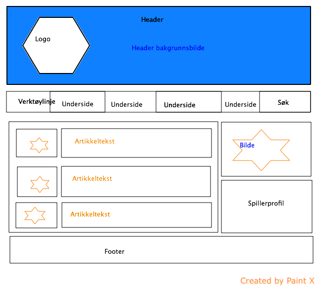

Prosjektrapport
Webprosjekt H2013 - HIOA

Webprosjekt H2013 - HIOA
Oppgaven var å lage en webside vi syntes virket interessant å lage. Tema og innhold for siden var valgfritt, men skulle interessere alle gruppemedlemmene. Gruppenene ble så langt som mulig delt inn i interesser etter ønske fra studentene.
Det var to teknologier som var påkrevd og viktigst skulle fungere 100%:
- HTML 5
- CSS 3
I tillegg måtte vi ha med minst én av følgende teknologier:
- Javascript
- PHP
Vi fikk tildelt vår gruppe torsdag 4.oktober. Gruppen bestod opprinnelig av fem studenter, men vi ble fire. De fire var:
- Magnus Tønsager
- Mimi Løland Wikant
- Tasmia Faruque
- Peter Wilhelmsen
Ingen kjente hverandre fra før, noe som ville gjøre oppgaven til en god utfordring.
Peter sendte 25.oktober ut en felles mail til alle sammen. Her delte han kontaktinformasjon og ga beskjed om at han kunne opprette en gruppe på Facebook for å sleppe å holde kontakten over mail.
Mandag 28.oktober møttes gruppa for første gang. Etter en kjapp hilserunde var vi i gang med å diskutere tema for websiden.
Peter ble prosjektleder.
Alle på gruppen hadde en eller annen interesse for sport og vi peilet oss fort inn på at vi ønsket at oppgaven skulle ha et sportstema. Det var ingen som hadde spesielle ønsker, men vi kom inn på ideen om å lage en sportsnettavis som skulle følge norsk sport og store norske utøvere i utlandet.
Tanken var å samle artikler fra andre sportsider, slik at vår side skulle være den eneste siden en sportsinteressert skulle trenge å klikke seg inn på for å holde seg oppdatert på det siste innen sport.
Da vi begynte å skrive forprosjektrapporten skjønte vi at den typen side vi tenkte å lage kanskje ville bli ganske ensidig med tanke på at vi skulle hente inn artikler og nyheter andre hadde skrevet. Ideen ble kastet og vi måtte begynne å tenke på nytt.
Vi landet tilslutt på at vi skulle lage en webside for et idrettslage. Med det som tema følte vi at det var mye mer vi kunne gjøre med siden. Vi kunne for eksempel lage spillerprofiler, nyheter, bildegallerier og kampreferater. Dermed var det bare å begynne og skrive en ny forprosjektrapport.
Vi har valgt å legge prosjektoppgaven på Magnus sitt hjemmeområde. Link og mulig kopier av hele prosjekt vil ligge på de andres hjemmeområde.
Første forprosjekrapport ble opprettet 28.oktober, men som nevnt over i 1.2 Tema måtte vi begynne på en ny rapport da vi skjønte at vår første idé kanskje ville bli kjedligere å arbeide med. Da vi møttes dagen etter gjorde vi om utkastet til å omhandle vår endelig idé.
Som arbeidsmetode velger vi prototyping. Tanken bak er at vi får siden opp og gå så kjapt som mulig, for deretter å kunne bygge videre på denne. Vi mener dette blir den mest effektive arbeidsmetoden for å utvikle websiden. Vi kommer da raskt i gang med siden, og får testet ulike design og brukerfunksjoner til vi finner noe som fungerer bra. Mot slutten av prosjektperioden vil vi få testet siden på andre brukere for å få forslag til eventuelle forbedringer.
Vi velger å bruke Github når vi skal jobbe med prosjektet vårt. Github er et godt verktøy for å kunne følge med på forandringer vi gjør i prosjektet underveis. I tillegg er det lett å legge inn endringer. Filene og forandringene vil ligge lett tilgjengelig for alle, og ingen vil gå glipp av oppdateringer underveis.
Prototype av grensesnittet
Forprosjektrapporten kan leses her
Samtidig med forprosjektrapporten skulle vi levere inn en kravspesifikasjon.
Formålet med nettsiden er å skape en hjemmeside for et idrettslag der man kan finne relevant informasjon om laget, nyheter, bilder og kontaktinformasjon. Vi vil ha med:
- Menylinje for å navigere mellom de forskjellige undersidene.
- Nyhetsartikler og intervjuer.
- Spillerprofiler.
- Søkefelt for å kunne søke på nettsiden.
Undersidene skulle gi tilgang til kampresultater, informasjon om styret, historie om laget, spillerprofiler slik at brukeren kan se hvem som spiller for klubben, se bilder fra kamp/arrangementer og et kontaktskjema for å sende henvendelser til laget.
Nettsiden skal være på norsk og støttes av de største nettleserne.
Da vi skrev forprosjektrapporten lagde vi også en milepælsplan som viste når vi planla å arbeide med og være ferdig med de forskjellige delene websiden skulle inneholde. Vi opplevde det som vanskelig å sette et tidsperspektiv på hvor lang tid det ville ta å jobbe med de forskjellige delene fordi ingen av oss har jobbet med denne typen prosjekt før.
Her er milepælsplanen vår.

Første gang gruppa møttes var mandag 28.oktober. En kjapp hilserunde og en idémyldring senere hadde vi allerede fordelt de første oppgavene:
- Peter fikk i oppgave å skrive første utkast til forprosjektrapporten ut i fra vår første idé. Utkastet skulle være klart til neste dag.
Vi møttes igjen onsdag 30.oktover og det var under dette møtet vi kasten idéen om sportsnettavis og peilet oss inn på å lage en hjemmeside for et idrettslag. Vi fikk samlet nye innspill og tanker til forprosjektrapporten.
Skissen ble lagt ut på Github og det var nå enkelt for alle å gå inn og gjøre endringer. Siste finpuss og validering av rapporten og kravspesifikasjonen ble gjort i løpet av dagen, og på kvelden la Magnus ut filene på sitt hjemmeområde. De andre la ut link til hans område på sine hjemmeområder.
Vi ønsket ikke å lage en side for et fiktivt lag og Peter tok derfor kontakt med fotballaget SBIO Athletics for å høre om de kunne tenke seg å være utgangspunkt for vårt prosjekt.
Allerede i løpet av onsdagen begynte det å komme på plass små deler til siden. Magnus opprettet det ytre rammeverket i index.php og Peter opprettet en tabell og en funksjon for å rullerende nyheter på hovedsiden vår.I tillegg kom det positivt svar fra fotballaget, de ville være med! Laget fikk tilsendt et skjema for å gi informasjon om hver spiller slik at vi kunne opprette profiler på hver enkelt.
Gruppen hadde ikke mer tid til å møtes denne uka.
Andre gruppemøte ble onsdag 6.november. Fra forrige møte hadde det blitt jobbet bra og flere sider var opprettet:
- Underside for spillerprofiler
- En underside for nyheter
- PHP Include lagt inn i index.php
Den universelle utformingen kom i fokus i dag og vi er enige om at html-strukturen skal være godt bygget opp. For slik vi oppfattet det på vår gjesteforeleser som var blind, var det viktig at oppbyggingen av siden var gjort ordentlig slik at det ble mulig for dem å navigere seg gjennom siden med sine hjelpeverktøy.
Foreløpig klarer vi oss med å møtes en gang i uka, men dersom vi trenger hjelp/innspill tar vi fortløpende kontakt med de andre om å møtes.
En god uke der vi fikk på plass mye av den ytre strukturen på siden vår og vi fikk testet at inkluderingen av de forskjellige undersidene funket.
Vi har enda ikke bestemt oss for et tema for layout på siden, men vi er enige om at vi ser nærmere på dette neste uke når de forskjellige undersidene er oppe og går for fullt. Da er det lettere å få oversikt og kunne se for oss hvordan vi ønsker fargebruken skal være.
Tanken om å involere jentelaget til SBIO Athletics har vært oppe for diskusjon. Om jentelaget vil bidra vil det gi mer innhold og variasjon på siden. Det blir bestemt at vi tar kontakt med dem for å høre om det er noe de kunne tenke seg å være en del av.
Samtidig som vi jobber med oppgaven har alle sammen andre innleveringsoppgaver. Tiden går fort og vi ser at vi kanskje må stramme inn på tidsfristene vi setter til hverandre. Ting må på plass selv om kveldene blir lange. Plutselig er leveringsfristen her og hvem vet hvilke problemer som kan dukke opp på et senere tidspunkt.
Onsdag 13.november møttes vi for en oppsummering og fordeling av nye oppgaver. For å få mer spennende innhold på siden bestemmer vi oss for å lage et intervju til styreleder for SBIO Fotball og et intervju til en spiller. Tasmia påtar seg oppgaven å skrive intervjuene.
Mimi, som vår PHP-ekspert, skal inkludere alle undersider og kontaktskjema slik at dette ligger på sine plasser og fungerer slik vi ønsker.
Magnus jobber videre med profilene og tar en titt på problemet angående flyten av elementer på hovedsiden.
Peter begynner å skrive på prosjektrapporten og tar kontakt med laget og hører om det er flere som vil stille med informasjon til profiler. Han skal også få tak i informasjon om styret for å kunne legge dette ut på kontaktsiden.
Vi er samtidig oppmerksom på at easteregg-delen har falt litt utenfor. Alle blir bedt om å sette i gang sine kreative hjerneceller for å komme på et morsomt "påskeegg".
Gjennom arbeidsøkten fikk vi inkludert og sjekket at alle undersidene funket som de skulle.
Det finnes enkelte småproblemer utseendemessig på de forskjellige undersidene, men den personen som har jobbet med den siden det gjelder tar for seg problemet.
Og i løpet av helga vil all CSS bli samlet i en fil.
Denne uka fikk vi for første gang se hvordan websiden ville bli med alle undersider inkludert. Et godt steg i riktig retning. Vi ser at det fortsatt venter mye jobb, men gjengen er forberedet på at det blir en knallhard siste uke.
Vår første skikkelig arbeidsøkt sammen fungerte bra. Selv om vi har hatt god kommunikasjon og har møttes flere ganger i uken tidligere var det veldig OK å ha en slik type arbeidsøkt sammen.
Gjennom helga fikk vi samlet CSS´en i en fil og Runar fra SBIO leverte et glimrende intervju som vil "krydre" siden vår bra. I tillegg sendte han oss noen bilder som vi kan opprette et bildegalleri av.
Neste møte er mandag.
Vi konkluderer i en god uke og et steg nærmere mål!
Oppgavene tok vi på strak arm der vi satt. En tre timers arbeidsøkt gikk fort og vi fikk løst mange av småproblemene med hjelp av hverandre. Teamwork!
Kontaktskjemaet fungerer og sender henvendelsen til mailadressen vi har lagt inn.
Mer og mer CSS faller på plass og Tasmia har begynt arbeidet med stil-arket som har mer fokus på universell utforming.
Mot slutten av uka må vi sette av tid til evaluering av arbeidsmetode, teknologier og hvordan arbeidet har fungert i gruppen.
Nest siste arbeidsøkt ble holdt i dag. Merker at gruppa har blitt bedre kjent siden starten, for nå sitter praten og humøret mye løsere!
Dagens gladnyhet var at jentelaget til SBIO Fotball vil bidra! Naomi Thayland som er leder for laget har lovet at informasjonen fra hver spiller skal komme i løpet av kvelden. Vi venter i spenning! Hun har også sagt ja til å stille opp på samme intervju som leder for guttelaget svarte på. Vi er kjempetakknemlige da vi synes disse intervjuene gjør siden vår mye mer innholdsrik.
Stil-ark nummer to begynner å ta form, samtidig som hoved-CSS blir bedre og bedre.
Magnus løste problemet med plassering av elementene på hovedsiden og ordnet slik at elementene flyter vår vindus-størrelsen justeres.
Mimi har oppdatert CSS rundt kontaktskjemaet og jobber nå med bildene m/link som skal rulle på hovedsiden. 3 av bildene ble ferdige under arbeidsøkten.
Peter har skrevet ferdig rapporten så langt som det går, og har startet med å skrive den inn som HTML.
I løpet av kvelden fikk Magnus rettet PHP-feilmeldingen ved bruk av isset(). Vi har visst om feilen, men glemt å notere oss den i rapporten tidligere. Han har laget refresh-funksjonen og den ser ut til å virka akkirat som vi har tenkt!
Peter har laget et forslag til easter-egg. Hva som skal brukes diskuteres fredag. Sitter muligens med en idé om å legge inn et easter-egg nummer to.
Vi har mottatt spillerprofilene fra jentelaget og beskjed om at intervjuet av Naomi kommer torsdag.
Alle jobber individuelt i dag og gjør klart alt til fredag.
I løpet av morgenen har Peter rettet feilen i menylinjen og rapporten begynner å ta form i HTML. I tillegg har undersiden til damelaget fått innhold og en tabell.
Siste uka gikk utrolig fort! Det føltes som tiden ikke kom til å strekke til, men etter hvert som bitene falt på plass én etter én skjønte vi at det kom til å gå bra. Det var en lettelse å endelig se en webside som fungerte med alle de delene vi har laget hver for oss.
Det at vi fikk tre arbeidsøkter i lag gjorde susen. Vi hadde godt utbytte av dem og kom frem til de tingene vi lurte på eller va usikre på.
Selv om ikke alt falt fullstendig på plass da vi møttes for siste gang på fredag føler vi oss trygge på at de små bitene som gjenstår blir ferdigstilt i løpet av lørdagen. De største filene er lastet opp på hjemmeområdet til Magnus, så det er kun små endringer som må legges inn.
Søndags ettermiddag var de aller siste bildene og endringene på plass!
God innsats gjennom "finaleuka" og det er en gjeng som er spent på tilbakemeldinger på produktet!
Siste gang vi møttes tok vi en prat rundt prosjektgjennomføringen og under følger en evaluering av metoder, verktøy og teknologier.
Vi følte ikke at vi hadde brukt noen spesiell arbeidsmetode i dette prosjektet. I forprosjektrapporten nevnte vi prototyping som metode. Vi ville lage en fungerende side, et utkast, for så å prøve og feile oss fremover mot sluttproduktet. Sann sett har vi kanskje misforstått prototyping, det er mer et verktøy som kan inngå i en utviklingsmodell.
Men setter vi en struktur på hvordan vi jobbet med prosjektet kan vi kalle det en slags prototype-jobbing.
Vi er ikke fornøyde med hvor lang tid vi brukte på å sette alle de forskjellige delene sammen til én helhet. Vi hadde lenge delferdige undersider og testet disse én og én om gangen helt frem til siste uka der vi endelig fikk skjøtt alle sidene sammen.
Det som tok aller mest tid for vår del var CSS´en. Det tok tid å klare å plassere elementene og skjønne seg på hva som gjorde at ting ikke ville legge seg dit vi ville.
Stilark nummer 2 med fokus på universell utforming tok også en del tid. Det å få en god forståelse om universell utforming og hva dette innbærer. Vi har vært nøyaktige med oppbyggingsstrukturen til sidene for å holde den så ren og ryddig som mulig. Det er det som er blitt vårt hovedfokus med tanke på utformingen. Fargebruk og layout på stilark nummer 2 er tenkt å være enklere å se for folk som f.eks. har dårligere syn enn normalt.
Vi har ikke noe spesielt vi følte ikke fungerte utenom at det var tungvint med testing av siden underveis pga PHP.
Den største utfordringen var å samle informasjon å bruke. Det meste av info gikk gjennom Peter siden det var han som kjente de personene vi fikk tilsendt fra.
Dette ble en flaskehals og ga for mye jobb til en person.Informasjonen vi har brukt er fra private personer og derfor ble det slik.
Selv om vi kun hadde 6 rene arbeidsøkter sammen synes vi at dette har holdt. Vi har vært flinke å gjort de oppgavene vi skulle til hver gang vi møttes og for å holde fremgangen gående. De 6 øktene har vært veldig bra og vi brukte dem godt.
Vi hadde ingen krangler eller store diskusjoner, alt har omtrent gått på skinner. De små diskusjonene vi har hatt har løst seg kjapt og vi ble enige om løsninger gjennom at hver person fikk komme med sine synspunkter, for så å vurdere det beste forslaget.
Vi er fornøyd med sluttproduktet vårt! Websiden ble som vi hadde tenkt og forestilt oss fra starten. Vi har levert det vi skrev i kravspesifikasjonen og enda litt mer med tanke på at vi fikk med oss hele SBIO Fotball.
Ved prosjekstart var det en gruppe som var spent med tanke på at ingen kjente hverandre fra før. Vi synes vi har fått til et bra samarbeid den perioden prosjektet har pågått!
Takk for innsatsen alle sammen!